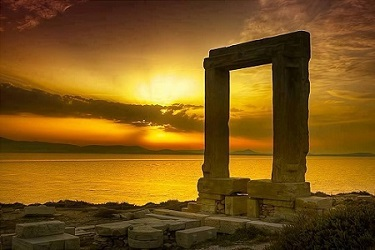
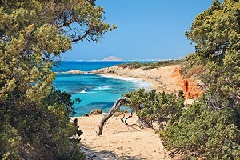

Η Νάξος είναι ένα μεγάλο νησί που βρίσκεται στο κέντρο των θαλάσσιων δρόμων του Αιγαίου, με επιβλητικούς ορεινούς όγκους και εύφορες κοιλάδες,
που κατοικείται απόκεφάτους ανθρώπους με παράδοση στη μουσική και το χορό,γεμάτη ομορφιές που μαγεύουν τους επισκέπτες.

Με τη μακρόχρονη ιστορία της, τα σημαντικά μνημεία, αλλά και την έντονη τουριστική ζωή, κατέχει ξεχωριστή θέση ανάμεσα στα άλλα κυκλαδονήσια.
Όσες μέρες κι αν καθίσετε στη Νάξο, θα έχει πάντα κρυμμένες γωνιές για να ανακαλύψετε, παραλίες που δεν έχετε ακόμη δει,
πύργους και κάστρα που δεν προλάβατε να επισκεφθείτε, αρχαίους ναούς που δεν μάθατε τα μυστικά τους.
Η εναλλαγή στη φύση της Νάξου είναι μεγάλη: Βουνά με φαράγγια, σπήλαια και ρεματιές σκιάζουν κατάφυτες κοιλάδες με λιόδεντρα, συκιές, πορτοκαλιές,
λεμονιές, αμπέλια και άφθονα τρεχούμενα νερά.
Η εναλλαγή στη φύση είναι μεγάλη:Βουνά με φαράγγια, σπήλαια και ρεματιές
σκιάζουν κατάφυτες κοιλάδες με λιόδεντρα, συκιές, πορτοκαλιές, λεμονιές,
αμπέλια και άφθονα τρεχούμενα νερά.

Οι κάμποι ακουμπούν σε απαλές αμμουδερές παραλίες, με κέδρους και αλμυρίκια. Γύρω από τους οικισμούς απλώνονται κτήματα και περιβόλια.
Εκτός όμως από τη στεριά, υπάρχει και ένας άλλος κόσμος, ο κόσμος του βυθού γύρω από τη Νάξο, ένα ξεχωριστό ταξίδι που θα σας συναρπάσει.
Γύρω από το νησί υπάρχουν απερίγραπτης ομορφιάς υποβρύχια οικοσυστήματα, με τεράστια εναλλαγή βυθού, ύφαλοι και ξέρες γεμάτοι ζωή, λιβάδια ποσειδωνίας
με πλάκες χρωματιστές και κοράλλια.